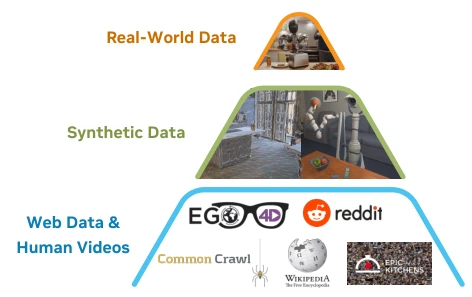
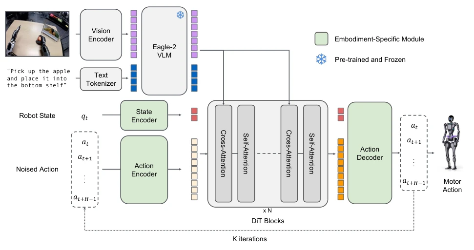
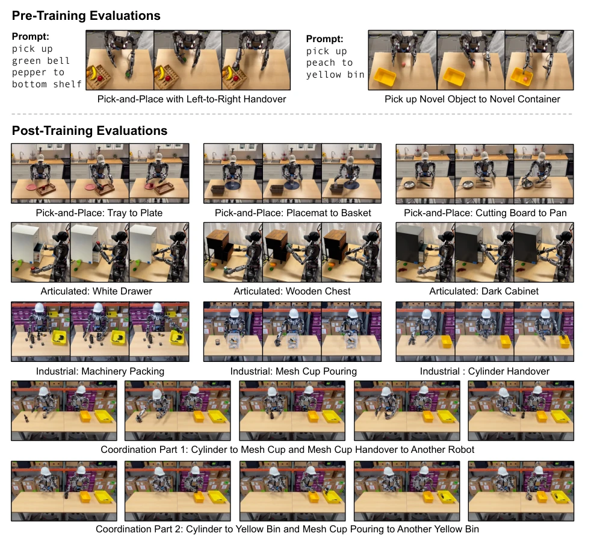
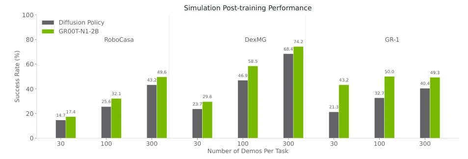
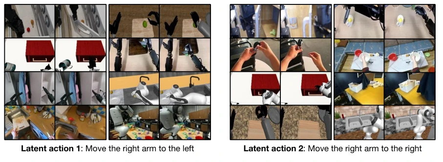
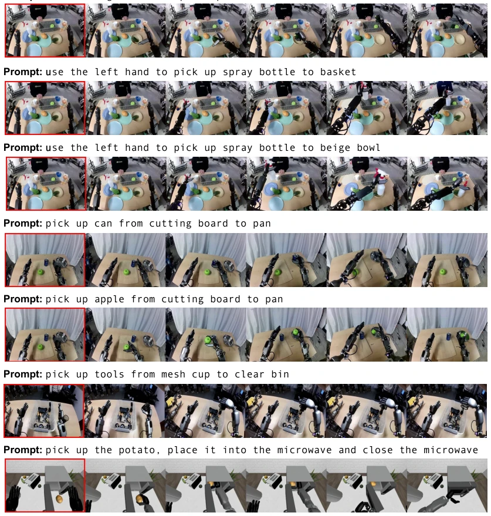
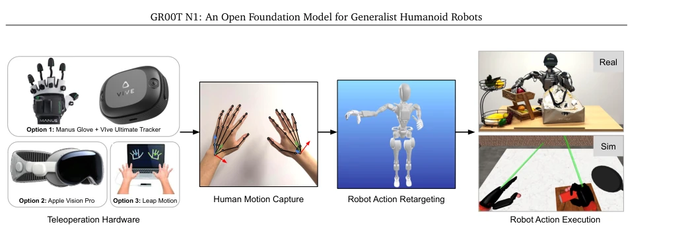
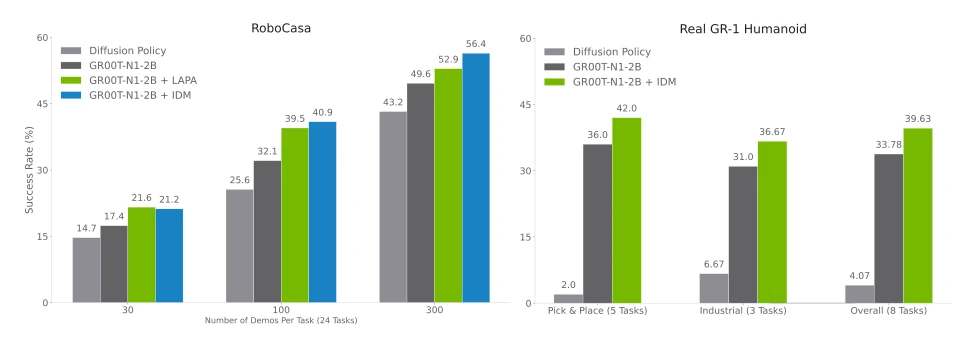

人形机器人要实现通用自主，核心瓶颈在于数据。现有工作如 Open X-Embodiment Collaboration et al., 2024 虽尝试跨具身学习，但不同机器人的传感器、自由度差异导致数据难以融合，形成“数据孤岛”。互联网规模的数据无法直接用于机器人预训练，单一硬件数据量级太小。此外，真机数据采集成本高、耗时长，限制了大规模训练。因此，亟需一种能整合多源异构数据（网络视频、仿真、真机）的通用基础模型，解决数据稀缺问题，并赋予机器人处理新场景的推理与泛化能力。
—

Figure 1: Data Pyramid for Robot Foundation Model Training. GR00T N1’s heterogeneous training corpora can be represented as a pyramid: data quantity de- creases, and embodiment-specificity increases, moving from the bottom to the top.
Figure 2: GR00T N1 Model Overview. Our model is a Vision-Language-Action (VLA) model that adopts a dual-system design. We convert the image observation and language instruction into a sequence of tokens to be processed by the Vision-Language Model (VLM) backbone. The VLM outputs, together with robot state and action encodings, are passed to the Diffusion Transformer module to generate motor actions.

Figure 3: GR00T N1 Model Architecture. GR00T N1 is trained on a diverse set of embodiments ranging from single-arm robot arms to bimanual humanoid dexterous hands. To deal with different robot embodiment’s state observation and action, we use DiT blocks with an embodiment-aware state and action encoder to embed the robot’s state and action inputs. GR00T N1 model leverages latent embeddings of the Eagle-2 model to incorporate the robot’s visual observation and language instructions. The vision language tokens will then be fed into the DiT blocks through cross-attention layers.
Figure 7: Simulation Tasks. Our simulation experiments use tasks from two open-source benchmarks (Robo- Casa (Nasiriany et al., 2024) in the top row and DexMimicGen (Jiang et al., 2024) in the middle row) and a newly developed suite of tabletop manipulation tasks that closely resemble our real-world tasks (bottom row). We provide Omniverse renderings of the tasks above.

Figure 8: Real-World Tasks. All images are captured from policy rollouts of GR00T-N1-2B and models post- trained from GR00T-N1-2B. (Top) Pre-training evaluations. We design two manipulation tasks to assess our pretrained models. The left image shows a left-to-right handover, while the right image illustrates the placement of novel objects into an unseen target container. (Bottom) Post-training evaluations. We introduce four distinct task categories. From top to bottom, we present examples of object-to-container pick-and-place, articulated object manipulation, industrial object manipulation, and multi-agent coordination.

Figure 10: Average policy success rate on simulated manipulation tasks with varying numbers of demonstrations.
其他图片Other Figures

Figure 4: Latent Actions. We retrieve similar latent embeddings across various embodiments. The left images illustrate the latent action that corresponds to moving the right arm (or hand) to the left, while the right images illustrate the latent action that corresponds to moving the right arm (or hand) to the right. Note that this general latent action is not only consistent in different robot embodiments, but also in human embodiment.

Figure 5: Synthetically Generated Videos. We leverage off-the-shelf video generation models to create neural trajectories to increase the quantity and diversity of our training datasets. These generated data can be used for both pre- and post-training of our GR00T N1. (1) The first three rows are generated from the same initial frames but with different prompts (change left or right, the location to place the object), (2) the following two are from the same initial frames but replace the object to pick up, (3) the next row showcases the video model generating a robot trajectory which is very challenging to generate in simulation (spilling contents inside a mesh cup into a bin), and (4) the last row is generated from an initial frame from simulation data. We use the red rectangles to indica

Figure 6: Data Collection via Teleoperation. Our teleoperation infrastructure supports multiple devices to capture human hand motion, including 6-DoF wrist poses and hand skeletons. Robot actions are produced through retargeting and executed on robots in real and simulation environments.

Figure 9: Neural Trajectories Ablations. In the RoboCasa simulation, we show using neural trajectories for post-training across 3 data regimes (30, 100, and 300 per task). In the real world, we show results only on the low-data regime (10% of the demonstrations). We co-train with 3k neural trajectories per task for RoboCasa and 100 neural trajectories per task for real-world tasks. We explore using both latent and IDM-labeled actions in simulation and only IDM-labeled actions for the real robot.